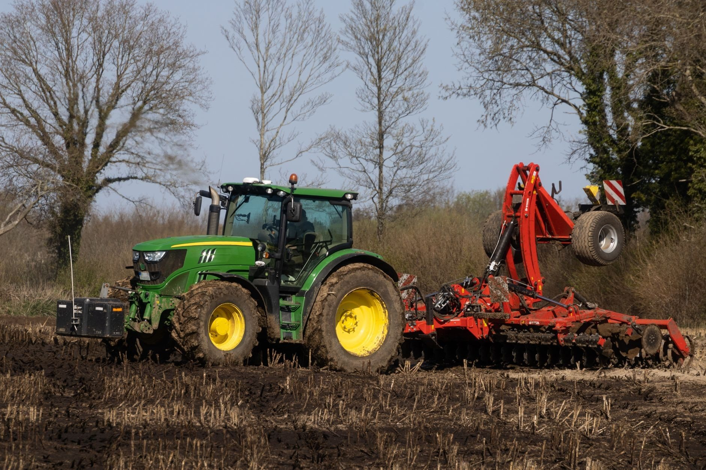

Sklep z częściami do kombajnów, ciągników i maszyn rolniczych w Wągrowcu i Margoninie. Od 1990 roku doradzamy w doborze i mamy to, czego potrzebujesz w sezonie.

Agrotom to rodzinny sklep z częściami i maszynami rolniczymi z Wągrowca, działający od 1990 roku. Długoletnie doświadczenie pozwala nam doradzić w doborze właściwej części - bez błądzenia.
Współpracujemy ze sprawdzonymi dostawcami: Agrorami, Rolmar, Agromarket, Agromasz i Granit-Parts. Obsługujemy klientów z dwóch punktów - w Wągrowcu i Margoninie.
Poznaj nas →Części zamienne i eksploatacyjne, maszyny oraz artykuły przemysłowe - dla rolnictwa i warsztatu.
Maszyny i sprzęt rolniczy, który pomagamy utrzymać w ruchu.


Zadzwoń lub napisz - sprawdzimy dostępność i doradzimy, co pasuje do Twojego sprzętu.